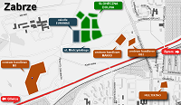

|
S³oneczna dolina to obszar oko³o 120 hektarów, po³o¿ona jest w pó³nocno-zachodniej czê¶ci Zabrza, pomiêdzy ulicami Heweliusza, Miel¿yñskiego, Al Korfantego i Szkubacza, od strony zachodniej s±siaduje z terenami le¶nymi pow. 50ha (z wytyczonymi ¶cie¿kami rowerowymi i pieszymi) , parkiem linowym, kortami tenisowymi, stadnin± koni i k±pieliskiem le¶nym Maciejów przy ul. Srebrnej, od strony po³udniowej z hipermarketem M1, hal± Makro, OBI, salonem meblowym BRW i drog± ruchu ekspresowego E88 Bytom-Gliwice. Ponad to od strony ul. Miel¿yñskiego s±siaduje z Multi-kinemi oraz centrum basenowym i centrum Zabrza. Lokalizacja ta oferuje bardzo dobry dojazd do Drogowej Trasy ¦rednicowej, a tak¿e do Drogi Krajowej nr 4, dziêki czemu u³atwiony jest dojazd do Autostrady A1, która znajduje siê w odleg³o¶ci zaledwie 4km od osiedla.
Ca³a S³oneczna dolina dobrze jest skomunikowana z miastem Zabrze oraz okolicznymi miastami poprzez dobrze zorganizowan± komunikacjê autobusow±.
Obszerne kompleksy le¶ne, s±siedztwo terenów rekreacyjno-wypoczynkowych, k±pielisko, us³ugi wysoko zorganizowane, zaplecze du¿ych osiedli mieszkaniowych: Koperniki i Curie-Sk³odowskiej z infrastruktur± o¶wiatow±, us³ugow± i kulturaln± oraz znakomite po³o¿enie wzglêdem tranzytowych uk³adów komunikacyjnych stanowi o wyj±tkowo¶ci "S³onecznej Doliny".
|
{kind=link}